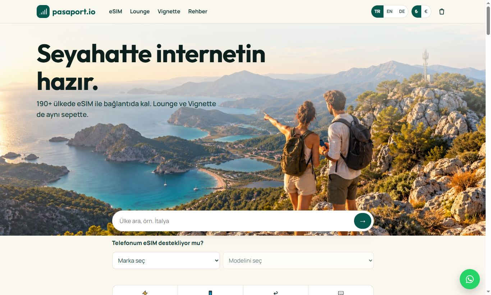
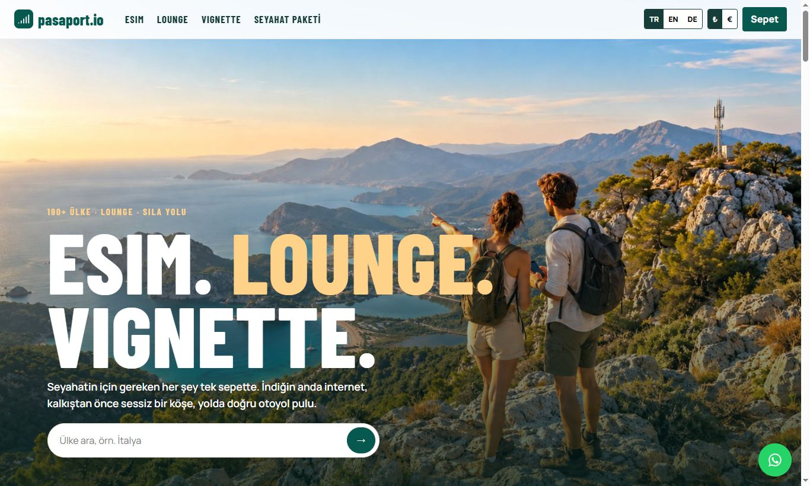
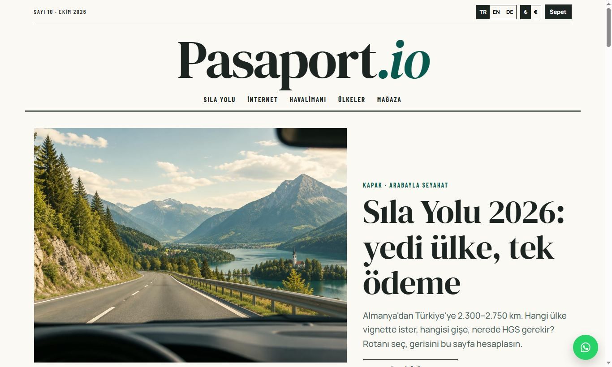
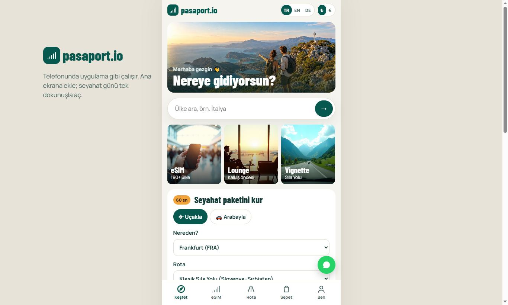

Pasaport.io: mevcut sitenin geliştirilmiş hâli + 3 yeni tasarım
Merhaba Emre Bey, pasaport2.lovable.app'teki sitenizi inceledik. İstediğiniz gibi önce mevcut sitenizi aynı renk, logo, paket ve fiyatlarla geliştirdik; ayrıca sıfırdan yapılacak bir site için üç farklı yerleşim hazırladık. Hepsi çalışır hâlde: ülke seçip sepete ekleyebilir, ödeme sonrası QR teslim ekranını görebilirsiniz. TR / EN / DE düğmesi her sayfada var.

Aynı marka, renk, fotoğraf ve fiyatlar. Kapalı duran Lounge ve Vignette satışları açıldı; “YENİ” etiketli bölümler bizim eklediklerimiz.
Canlı aç →- Lounge ve Vignette sayfaları “şu anda kullanılamıyor” diyordu: ikisi de satışa açıldı
- Altbilgideki “Travely” adı Pasaport.io olarak düzeltildi
- Tek seferde seyahat paketi (eSIM + lounge + vignette, paket indirimi)
- Sıla Yolu otoyol planlayıcı: 5 rota, 2026 resmî ücretleri, plakayla tek ödeme
- Veri hesaplayıcı, terk edilmiş sepet hatırlatma, referans kodu, acente paneli

Tam ekran fotoğraflar, üç hizmet tek bakışta; kampanya ve reklam trafiği için.
Vitrin yerleşimi: tam ekran fotoğrafCanlı aç →
Rehber yazılarının içinde araçlar: Google'dan ücretsiz ziyaretçi çeken içerik düzeni.
Dergi yerleşimi: çerçeveli fotoğraf, numaralı bölümlerCanlı aç →
Adım adım akış, alt menü, 60 saniyede sipariş; ileride mağaza uygulamasına dönüşür.
Uygulama yerleşimi: kartlar, açılır paneller, alt menüCanlı aç →- Ülke/rota seç → eSIM + lounge + vignette tek sepette “seyahat paketi” (paket indirimi)
- Sıla Yolu planlayıcı: Avusturya, Slovenya, Macaristan, Romanya, Bulgaristan, Çekya, Slovakya, İsviçre vignette'leri; gişe ve HGS bilgisi; gidiş-dönüşte en ucuz süre seçimi
- eSIM cihaz uyumluluk kontrolü (marka / model) ve veri hesaplayıcı (gün × kullanım → GB önerisi)
- Havalimanı lounge arama (FRA, DUS, MUC, IST, AYT…) ve ödeme sonrası QR teslim ekranı
- TR / EN / DE dil ve ₺ / € para birimi düğmesi (gurbetçi ve Alman müşteri)
- İş geliştirme: terk edilmiş sepet hatırlatma, referans (affiliate) kodu, seyahat acentesi paneli, WhatsApp/e-posta kampanya listesi, yorum bölümü, ölçüm etiketleri
Fiyatlar: A · mevcut siteyi geliştirme 9.900 TL · B · sıfırdan profesyonel site 19.900 TL (KDV dahil değildir; ≈ 178 € / ≈ 358 €, 19.10.2026 ECB kuru 1 € = 55,62 TL).